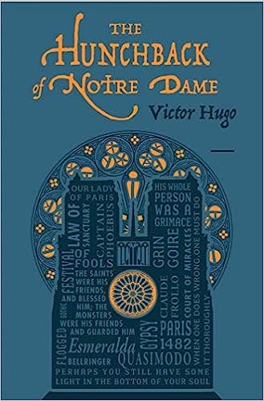
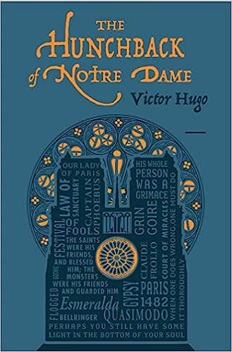

During the 1482 Festival of Fools in Paris, Quasimodo, the hunchback of Notre Dame , is elected the Pope of Fools for being the ugliest person in Paris. He is hoisted on a throne and paraded around Paris by the jeering mob.
Pierre Gringoire, a struggling poet and philosopher, tries unsuccessfully to get the crowd to watch his play instead of the parade.
Archdeacon Claude Frollo appears and stops the parade and orders Quasimodo back to Notre Dame with him. Looking for something to eat, Gringoire admires the graceful beauty of La Esmerelda, a gypsy street dancer, and decides to follow her home.
After rounding a corner, she is suddenly attacked by Quasimodo and Frollo. Gringoire rushes to help her but is knocked out by Quasimodo as Frollo runs away.
The King's Archers, led by Phoebus de Chateaupers arrive just in time and capture the hunchback.
Later that night, a group of beggars and thieves are about to hang Gringoire when La Esmerelda comes forward and offers to save his life by "marrying" him for four years only.
If you’re into “web typography,” you’ll also find yourself using curly quotes quite a bit.